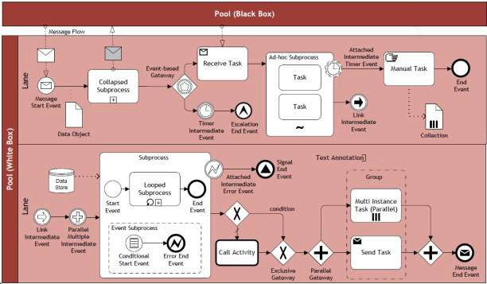

Business Process
Management
Process Discovery Unit 4
1

Process Discovery
As a act of gathering information about an existing process and organising it in terms of an as-is process model.
Gathering and organising information
Broader activity than modelling a process
Enough information is gathered which is time consuming and cumbersome in practice
2

Process Discovery - Phases
Defining the setting: This phase is dedicated to assembling a team in a company that will be responsible for working on the process.
Gathering information: This phase is concerned with building an understanding of the process. Different discovery methods can be used to acquire information on a process.
Conducting the modeling task: This phase deals with organizing the creation of the process model. The modeling method gives guidance for mapping out the process in a systematic way.
Assuring process model quality: This phase aims to guarantee that the resulting process models meet different quality criteria. This phase is important for establishing trust in the process model.
3
Unit iv syllabus
The Setting of Process Discovery - Discovery Methods - Process Modeling Method - Process Model Quality Assurance.
4

Who is involved?
Domain Expert Process
Analyst
5

Who is going to model the process?
Eg.
The task of modelling the process of signing a rental contract in your city.
The task of modelling the process of getting a license plate for your car in a country as a foreign resident
6

Aspect | Process Analyst | Domain Expert |
Modelling Skills | Strong | Limited |
Process Knowledge | Limited | Strong |
7


Stakeholders in Detail
8

Challenge 1: Fragmented
9
Why can‘t I directly provide cash after approval?
I make a photocopy before handing over the application
We bundle refinancing to
get better interest rates.
Process Knowledge

Challenge 2:
Domain Experts think on Instance Level
”Every trip is different.“
”You cannot really compare. Our customers go to different places in different seasons using different modes of transportation.“
”We can never do anything exactly
in the same way. There are so many special conditions.“
10

Challenge 3:
Knowledge about Process Modelling is rare
”Could you please tell me, whether this
diagram correctly shows your process?“

11

Expertise of Process
Analysts
Problem understanding
Episodic knowledge available to get to root of problem
Knowledge organisation helps to structure problem
Problem solving
Trigger identification (problem-related cues)
Hypothesis management (formulation and testing of hypotheses)
Goal setting (what needs to be achieved next)
Top-down strategy driven by analysis goals
Modelling skills
Well-structured and laid out
Systematically labelled
Explicit start and end points of a process
Appropriate granularity and decomposition
12

Process Discovery Methods
Evidence-based
Document analysis
Observation
Process mining
Interview-based iii.Workshop-based
13

Document Analysis
Documents point to existing roles, activities and business objects
Formal documentation in terms of
Organization chart
Employment plan
Quality certificate report
Internal policies
Glossaries and handbooks
Forms
Work instructions
14

Observation
Observe what people do at their workplace
Trace business objects in the course of their lifecycle
Inspect the work environment
15

Process Mining

16

Interview-Based Discovery
17

Structured vs. unstructured interviews
Assumption: analyst and stakeholder share terminology
Then, questions target at identifying deviations from standard processing
18

Workshop Based Discovery
Gather all key stakeholders together
One process analyst, multiple domain experts
Participants interact to create shared understanding
Often: software-supported, a model is directly created during the workshop (separate role)
Model is reference point for discussions
Alternative: brown-paper workshops
19

Aspect | Evidence | Interview | Workshop |
Objectivity | High | Medium-high | Medium-High |
Richness | Medium | High | High |
Time Consumption | Low-medium | Medium | Medium |
Immediacy of Feedback | Low | High | High |
20

Strengths and Weaknesses
21

Effort of Process Discovery
Consider that the order process of your
favorite online book retailer has ten major activities that are conducted by different persons. How much time do you need approximately for creating a process model that is validated and approved by the process owner? Make appropriate assumptions.
22

Process Discovery Effort
This process contains ten major activities that are executed by different persons. We can assume that there will be a kickoff meeting with the process owner and some important domain experts on day one. One day might be required to study available documentation. An interview with one domain expert can take from two to three hours, such that we would be able to meet two persons per day, and document the interview results at night time. Let us assume that we meet some persons only once while we seek feedback from important domain experts in two additional interviews. Then, there would be a final approval from the process owner. This adds up to one day for the kickoff, one for document study, five days for the first iteration interviews, and further five days if we assume that we meet five experts three times. Then, we need one day for preparing the meeting for final approval with the process owner, which would be on the following day. If there are no delays and scheduling problems, this yields 2 + 5 + 5 + 2 = 14 work days as a minimum.
23

Any Difference in Discovery?
Consider the following two companies.
Company A is young, founded three years ago, and has grown rapidly to a current toll of one hundred employees.
Company B is owned by the state and operates in a domain with extensive health and security regulations.
How might these different characteristics influence a workshop-based discovery approach?
24

Discovery and Culture
Before starting with process discovery, it is important to understand the culture and the sentiment of an organization. There are companies that preach and practice an open culture in which all employee are encouraged to utter their ideas and their criticism. Such organizations can benefit a lot from workshops as participants are likely to present their ideas freely. In strictly hierarchical organizations, it is necessary to take special care that every participant gets an equal share of parole in a workshop and that ideas and critique are not hold back. It might be the case that the young dynamic company has a more open culture than the company with extensive health and security regulations. This has to be taken into account when organizing a workshop.
25

Identify the process boundaries
Identify activities and events
Identify resources and their handovers
Identify the control flow
Identify additional elements.
26

Under which condition does the process start?
With which result does it end?
Which perspective do you assume?
27

Identify Activities and Events
28
Identify Resources and their
Handovers
29


Identify Control Flow
30

Your modeling project
For your modeling project, capture
Control flow
Activities
Gateways
Conditions
Events
Resources
Describe the process in such a way that it can be used to trace in which state the admission/doctor-studies is and who is conducting which steps of processing.
31

4.Quality Assurance
32

Is this process model of
Deadlock
good quality?
33

Goal of producing the model that conforms the rules.
Cos. Give Guidelines to guarantee consistency and comparability :
Verification
Structural correctness – incoming &outgoing arc
Behavioural correctness – never reach livelock or deadlock
34
Syntactic Quality: Verification
Dr.R.Umarani
Assistant Professor
35

Is this process model of good
quality?
36

Formulate Labels Adequately
Activities as Verb-Object
Events as Object-Passive-Participle
Conditions with reference to Object
37

Semantic Quality: Validation
Correctness and


Completeness
Domain Expert Process Analyst
38

Good usability
Certification
Understand ability
Maintainability
Learning
39

Pragmatic Quality: Layout
Models must look nice
40

Seven Process Modeling
Guidelines (7PMG)
G1 Use as few elements in the model as possible G2 Minimize the routing paths per element
G3 Use one start and one end event G4 Model as structured as possible G5 Avoid OR routing elements
G6 Use verb-object activity labels
G7 Decompose a model with more than 50 elements
41

Explain which 7PMG guidelines point to potential
for
improvement. Remodel the process based on your
observations.
42

The reworked process
43

Summary
Domain expert and process analyst have different strengths and limitations in process discovery
There are various discovery methods
Quality Assurance is important
44

45